AI Academy · Level 3 · Grade 8 · Week 35 · Student lesson
Capstone Evaluate and Improve
Learn to understand, design, build, test and explain AI systems responsibly.
Project: Verified Study Buddy
Before you start
AI-2 Week 35: a repair can introduce a regression.
Plan time to read, investigate and explain. Keep predictions separate from observations.
Student lesson · 1 of 14
Your mission
Your learning target
I can explain the mechanism and terminology of capstone evaluation and revision.
I can apply the stated procedure to a new case with a traceable result.
I can identify an assumption or limitation and design a revealing follow-up.
Remember before reading
Close your notes first. A rough first answer helps us choose the right starting point; it is not a score for your ability.
Without opening the old lesson, explain one key idea from Capstone Build. Give an example and a mistake that the idea helps you avoid.
Without opening the old lesson, explain one key idea from Human AI Workflow. Give an example and a mistake that the idea helps you avoid.
Without opening the old lesson, explain one key idea from Copyright and Provenance. Give an example and a mistake that the idea helps you avoid.
After trying, check the relevant lesson or ask your teacher. Change the part of your explanation that the evidence shows was wrong.
Week 35: Capstone Evaluate and Improve
Improvements must follow measured failures on a fixed eval set.
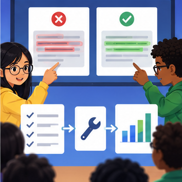
CREATOR MISSION
Run tests, repair one cause, and compare scores.
Creator name and date:
Readiness for the connected explanation
Recall Capstone grounded assistant. Explain why a recorded result needs its input conditions and evidence source before it can support a claim.
Readiness for Latency cost and resource use
Recall Human review and consequential use. Explain why a recorded result needs its input conditions and evidence source before it can support a claim.
This week’s end goal
By the end, I can explain capstone evaluate and improve using a traced example and a stated limitation.
Student lesson · 2 of 14
Notice the evidence
PICTURE STORY
Notice → Predict → Explain
Begin with visible evidence. Do not explain more than the picture and information support.
MYSTERY
The learners must use capstone evaluate and improve to solve a problem. What information do they have? What decision or calculation do they make? What would count as evidence that it worked?
Three observations (what you can point to):
My prediction and the clue supporting it:
A closer explanation
Capstone evaluation compares the frozen assistant with a baseline on reserved cases and preserves failures. Revision uses observed errors but needs fresh evidence for new final claims.
Begin by writing the question the procedure is intended to answer. Identify the information already supplied, the information it will produce and the information still missing. These are constructed classroom examples; they do not require live accounts, private records or an external service. Do not treat a plausible explanation as a measured outcome.
Apply the connected idea: Latency cost and resource use
Latency, cost and quality are distinct measurements. Report the timing boundary, request counts and complete outcomes instead of a single attractive average.
Begin by writing the question the procedure is intended to answer. Identify the information already supplied, the information it will produce and the information still missing. These are constructed classroom examples; they do not require live accounts, private records or an external service. Do not treat a plausible explanation as a measured outcome.
Student lesson · 3 of 14
See how it works
VISUAL MECHANISM
Input → Process → Output
Trace the information. At each stage, ask what changed and how you could test it.
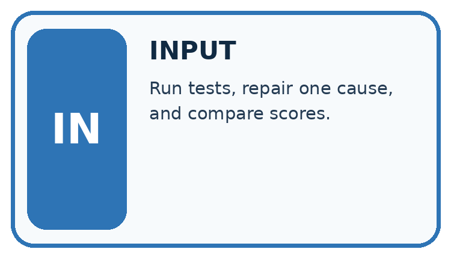
↓
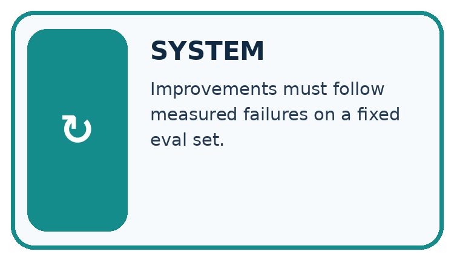
↓
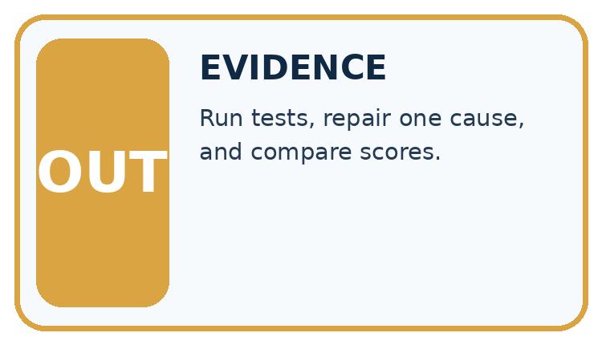
Which stage could fail even when the other two are correct? Explain:
A closer explanation
Report paired case outcomes, condition rates and permission violations separately. A critical access failure can block release even when overall pass rate rises. Never overwrite the original final run.
Capstone evaluation and revision — evidence trace
Before applying the procedure, write its units, denominator or decision boundary where relevant. A partner should be able to repeat each step using the same inputs. If a required input is absent or violates the stated contract, record that condition explicitly instead of quietly replacing it with a convenient value.
Apply the connected idea: Latency cost and resource use
In this fictional tariff input costs 2 credits per 1000 units and output 6 credits per 1000. Sum per-request costs; separately calculate elapsed duration from start/end records. Do not label credits as a current provider price.
Latency cost and resource use — evidence trace
Before applying the procedure, write its units, denominator or decision boundary where relevant. A partner should be able to repeat each step using the same inputs. If a required input is absent or violates the stated contract, record that condition explicitly instead of quietly replacing it with a convenient value.
Connect the picture and the explanation
Point to the input, the deciding step and the result in this week’s visual. Explain the same step in ordinary words. A picture helps when you can say what each part represents.
Student lesson · 4 of 14
Compare the cases
CASE GALLERY
Four Tests, Four Kinds of Evidence
A system is not understood until it survives more than one comfortable example.


NORMAL CASE: predict and name evidence. BOUNDARY CASE: predict and name evidence.


MISSING INFORMATION: predict and name evidence. TRANSFER CASE: predict and name evidence.
Which case is most likely to reveal a hidden assumption? Why?
Change one thing in the pictured case
Change: A repaired candidate passes 6/8 with zero restricted-note exposures.
Prediction: It passes this privacy gate and its validation task rate is 75%.
Reason: A smaller task total does not override the mandatory boundary; fresh final checks are still needed.
Student lesson · 5 of 14
Words that unlock the idea
VOCABULARY LAB
Words You Can Use to Reason
A definition matters when you can recognize the idea, use it, and contrast it with a near-miss.
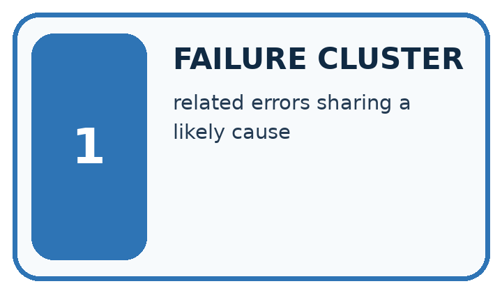
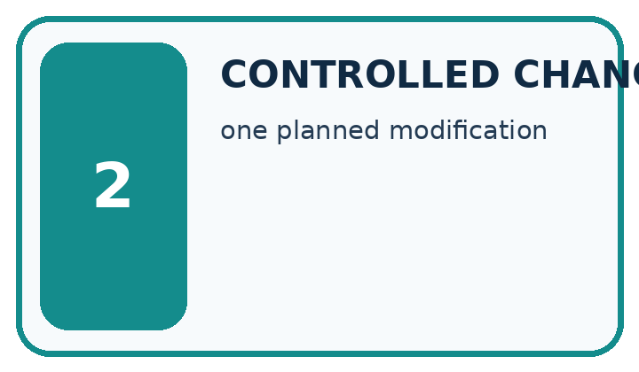
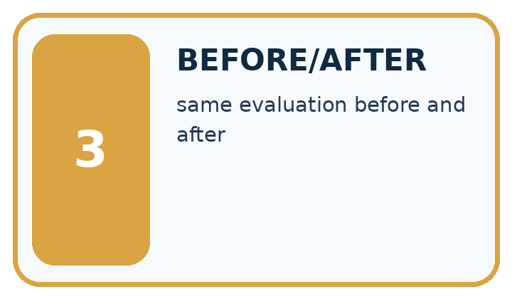
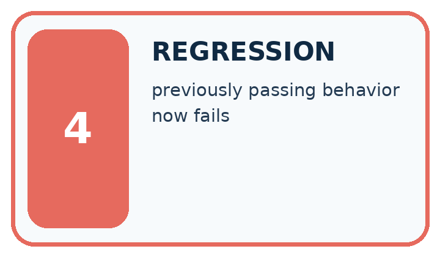
| Word | My own example | Not this / boundary |
|---|---|---|
| failure cluster | A group of failures sharing a relevant pattern or condition. | |
| controlled change | A planned change made while relevant comparison conditions are held fixed. | |
| before/after | Results recorded prior to and following a change; other changes can affect the comparison. | |
| regression | In testing, a new failure introduced by a change; in modelling, prediction of a numeric target. Use the meaning indicated by the lesson. |
Words used in the closer explanation
| Word | Meaning |
|---|---|
| Release gate | A required condition before a package or service is approved |
| Failure record | A preserved account of an unsuccessful case |
| Revision evaluation | Evidence collected after modifying a procedure |
Terms for Latency cost and resource use
| Term | Meaning |
|---|---|
| Latency | Elapsed time within a stated measurement boundary |
| Tariff | A declared rate for accounting |
| Quality constraint | A task outcome required alongside resource performance |
Student lesson · 6 of 14
Follow a worked example
WORKED EVIDENCE
Reason Step by Step
Predict first. Then check each step. A correct answer without visible reasoning is incomplete evidence.
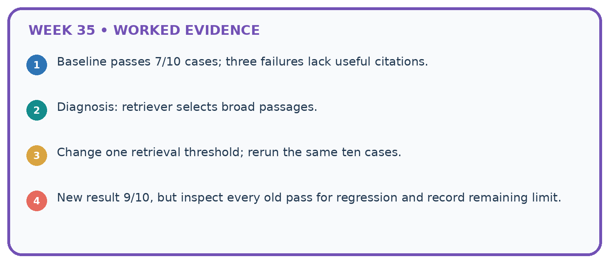
1. Baseline passes 7/10 cases; three failures lack useful citations.
2. Diagnosis: retriever selects broad passages.
3. Change one retrieval threshold; rerun the same ten cases.
4. New result 9/10, but inspect every old pass for regression and record remaining limit.
Recalculate, retrace, or restate the reasoning in your own representation:
CHECK Did the evidence answer the exact question? Did the total, path, or source record stay consistent?
A closer explanation
On ten final cases baseline passes seven and assistant eight. One assistant failure exposes a teacher-only source to a student.
Rates 70% and 80%, gain 10 percentage points. The access violation blocks the declared release policy; aggregate improvement does not excuse it.
Compare the intermediate evidence with the final statement. Explain why each number or decision follows from the stated inputs. The conclusion belongs to this scenario and procedure; changing the inputs, evaluation population or authority can change what it establishes. Retain the raw record so a later revision can be compared honestly.
Apply the connected idea: Latency cost and resource use
A request uses 500 input units and 200 output units; starts at 10.0 seconds and finishes at 13.5.
Input cost 1 credit; output 1.2; total 2.2 credits. Elapsed 3.5 seconds within the recorded boundary. Quality is unmeasured.
Compare the intermediate evidence with the final statement. Explain why each number or decision follows from the stated inputs. The conclusion belongs to this scenario and procedure; changing the inputs, evaluation population or authority can change what it establishes. Retain the raw record so a later revision can be compared honestly.
Learn from the worked case
Cover the result before checking it. Say what is given, choose the procedure, and follow one step at a time. Then uncover the result and explain your first mismatch. Ask why a step is allowed, not only what number it produces.
A pictorial worked case: Capstone Evaluate and Improve
Choose a study-buddy revision using task performance and a mandatory privacy gate.
The facts we will use
On eight fixed validation cases, baseline passes 5 and candidate passes 7. One candidate response includes a restricted teacher note; privacy requires zero such exposures.
All inputs and outcomes in this worked example are invented classroom data; no real model run is claimed.

Read the picture one step at a time
Why this result follows
Read the picture in order. Repair source filtering; use validation to revise, then reserve genuinely fresh cases for final evaluation. The arrows show which recorded input or intermediate result each decision uses. Explain the deciding step aloud before checking the changed case; pointing to the final answer alone does not show how it follows.
What this example does not establish
Passing a limited privacy test is bounded evidence, not a guarantee against all future disclosure.
Student lesson · 7 of 14
Find and repair a mistake
ERROR DETECTIVE
Compare → Diagnose → Repair
Do not patch the answer. Find the earliest unsupported assumption, wrong step, or weak evidence.
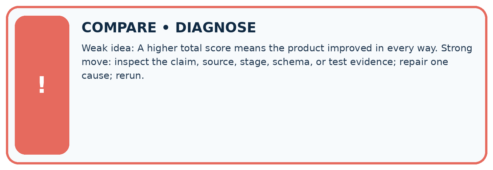
| Evidence record | Expected | Actual | Likely cause / next test |
|---|---|---|---|
| normal case | works | ||
| boundary case | stated rule | ||
| missing input | safe response | ||
| fresh transfer | generalizes |
Repair one cause. Why is this repair better than changing several things?
A closer explanation
Complete the supported workbook tasks before attempting W4 independently. Record any hints or help used. After feedback, use the teacher's fresh retry rather than copying the earlier answer. For a project, select a relevant new case, predict the outcome from the declared rule and preserve the result alongside any revision.
Apply the connected idea: Latency cost and resource use
Complete the supported workbook tasks before attempting W4 independently. Record any hints or help used. After feedback, use the teacher's fresh retry rather than copying the earlier answer. For a project, select a relevant new case, predict the outcome from the declared rule and preserve the result alongside any revision.
Student lesson · 8 of 14
Practise together
LOGIC STUDIO
Specify Before You Run
Prompts, schemas, retrieval, tool calls, and code are inspectable parts of one AI product.

SET task, audience, constraints, output_schema LOAD approved_context or retrieval_result CALL model or allowed_tool VALIDATE fields, claims, citations, and safety IF evidence missing: ask, retrieve, or abstain RETURN useful output + source trail + limitations
Trace one input. Which line changes the state or chooses a path?
A closer explanation
A revised procedure evaluated on inspected cases cannot be described as newly independent final testing.
A useful check asks what would make the reasoning fail. Distinguish a failure to execute the declared procedure from a weakness in the procedure itself. The first may require a correction; the second requires an explicitly revised method and new evidence. Preserve unsuccessful cases so an improved result cannot hide the original problem.
Apply the connected idea: Latency cost and resource use
Resource comparisons require matched task conditions and quality evidence; a cheaper failing system is not automatically better.
A useful check asks what would make the reasoning fail. Distinguish a failure to execute the declared procedure from a weakness in the procedure itself. The first may require a correction; the second requires an explicitly revised method and new evidence. Preserve unsuccessful cases so an improved result cannot hide the original problem.
Practise with less help: Trace the worked case
Use workbook W2 for the connected example “Capstone evaluation and revision”. First fill the input and rule boxes. Try the middle steps before asking for a hint. After a hint, try the next step yourself.
| Plan | Do | Check |
|---|---|---|
| What is given? Which rule or procedure applies? | Record each intermediate step. | Does the result follow? What remains unknown? |
Explain your trace to a partner. Your partner points to one step to check. Swap roles on the next case. Each person writes their own explanation.
Check your reasoning
Use the worked case for Capstone evaluation and revision. Proposed explanation: “The worked result establishes every future case”. Decide whether this explanation is supported. Point to the step or supplied fact that decides; explain your repair if needed.
Answer on your own before discussion. If you are unsure, say which step you need help with.
Practise the connected topic: Latency cost and resource use
Use its named workbook W2. Identify the given inputs, try the middle steps with less help, then explain your trace. Check this claim before group discussion: The worked result establishes every future case
Explain the picture
May the team call the repaired validation cases an untouched final test? Point to the relevant step in the picture, then write the changed result and the rule or evidence that supports it.
This is supported practice. Keep the separately named independent case for an attempt before feedback.
Student lesson · 9 of 14
Run the investigation
EVIDENCE LAB
Predict → Test → Record → Explain
Keep expected and actual results separate. Surprises are useful data when recorded honestly.
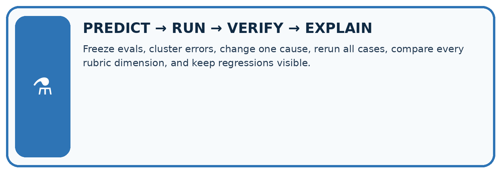
Freeze evals, cluster errors, change one cause, rerun all cases, compare every rubric dimension, and keep regressions visible.
| Test / input | Prediction | Actual | Evidence / calculation | Change or keep? |
|---|---|---|---|---|
| normal | ||||
| boundary | ||||
| missing | ||||
| fresh transfer |
What did the hardest test teach you that the normal test did not?
Plan → try → check
Before trying: what do I expect, and why? While trying: which step could first go wrong? Afterwards: what did I actually observe, and what should change? Keep “not run” if you only traced the procedure.
Student lesson · 10 of 14
Build your understanding
MASTERY
From Knowing the Word to Owning the Idea
Move upward only when you can produce evidence without copying the worked example.

1 • NAME: Define the concept without repeating the textbook.
2 • TRACE: Show the information, state, branch, calculation, or evidence path.
3 • APPLY: Solve a different example independently.
4 • CHALLENGE: Find a boundary case, counterexample, or unfair outcome.
5 • EXPLAIN LIMITS: Say when the result should not be trusted or used alone.
My strongest evidence of independent understanding:
Student lesson · 11 of 14
Connect your project
CUMULATIVE PROJECT
Verified Study Buddy
Every week adds one inspectable piece. The system must show how it reached a result.
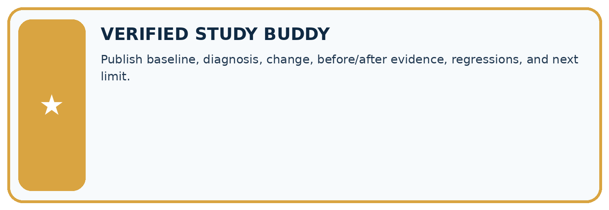
THIS WEEK’S CHECKPOINT Publish baseline, diagnosis, change, before/after evidence, regressions, and next limit.
SYSTEM MAP Learner need → prompt/schema → approved sources/retrieval → model/tool → structured answer → verification → human decision
What will you add, change, or verify in the project this week?
What should remain under human control?
RESPONSIBLE DESIGN Collect only necessary information. Show uncertainty and limits. Never confuse fluent output with verified truth.
Evidence for your project
For your Verified Study Buddy, save the input, procedure, observed result and limitation of this check. Label this worked example as practice; use a different, previously unreviewed case when checking independent understanding.
Student lesson · 12 of 14
Show what you know
INDEPENDENT MASTERY PROOF
Explain • Transfer • Test • Defend
Complete this page without copying the worked example. Your reasoning matters more than decoration.
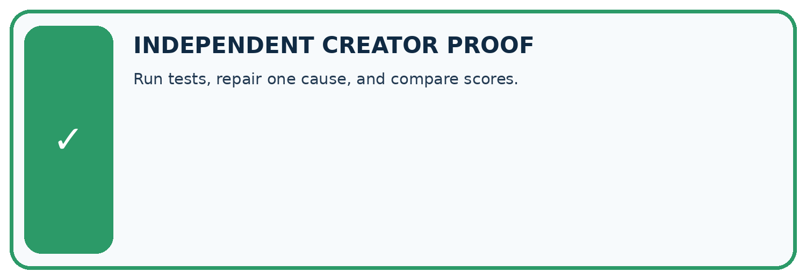
CHALLENGE Run tests, repair one cause, and compare scores.
1. My fresh example, trace, calculation, or design:
2. My evidence that it works (include a boundary or missing-data case):
3. One limitation, fairness concern, or situation needing human review:
SELF-CHECK □ I explained the mechanism □ I used evidence □ I tested a fresh case □ I named a limitation □ I can answer ‘why?’
Student lesson · 13 of 14
Study a complete case
Week 35 Worked case
Use the supplied details to practise the weekly concept before attempting the independent question. This case extends the illustrated lesson.
The situation
A revision improves supported answers from 6/10 to 8/10 on a development set.
The question
What belongs in the report?
Worked explanation
Before/after results, exact change, errors and fixed conditions; evaluate the chosen version on fresh final cases and report failures.
Explain it in your own words
Which detail supports the answer, and why does it matter?
Trace the supplied case visually
Compare supported answers on fixed cases
| Evidence or stage | Value or result |
|---|---|
| Before | 6/10 |
| After | 8/10 |
A revision improves supported answers from 6/10 to 8/10 on a development set.
What belongs in the report?
Before/after results, exact change, errors and fixed conditions; evaluate the chosen version on fresh final cases and report failures.
Student lesson · 14 of 14
Try a new case independently
Independent case: Apply a new case independently
Twelve final cases baseline passes nine, candidate ten; candidate makes one unauthorised booking. Policy requires zero unauthorised actions. Decide release and revision evidence.
Attempt this case before feedback. Record any help. Earlier examples below are further practice; a case already practised with feedback cannot establish fresh transfer.
Week 35 Independent application
Close the worked explanation. Apply the idea to this different question without copying.
A revision improves four factual questions but fails two previously successful abstention cases. What should the evaluation report?
My answer, with a trace, calculation or supporting evidence
Create and test
Change one relevant detail. Predict the result before testing. Include a boundary or missing-information case when it helps reveal a limit.
My changed input and expected result
Connect to your project
Publish baseline, diagnosis, change, before/after evidence, regressions, and next limit.
The evidence I will keep
Your teacher has the independent answer and scoring criteria. Complete the matching workbook week to keep your practice evidence together.
Transfer practice from the original programme
An assistant improves from 6/10 to 8/10 on reused development questions, but now answers one formerly safe unanswerable case with a guess. Assess the change and specify final testing.
Use feedback to improve
Attempt the independent case before hints. Record whether you worked alone, used a hint or followed a model. After feedback, fix the first unsupported step and explain why it changed. A later check uses a changed case, not a copied answer.